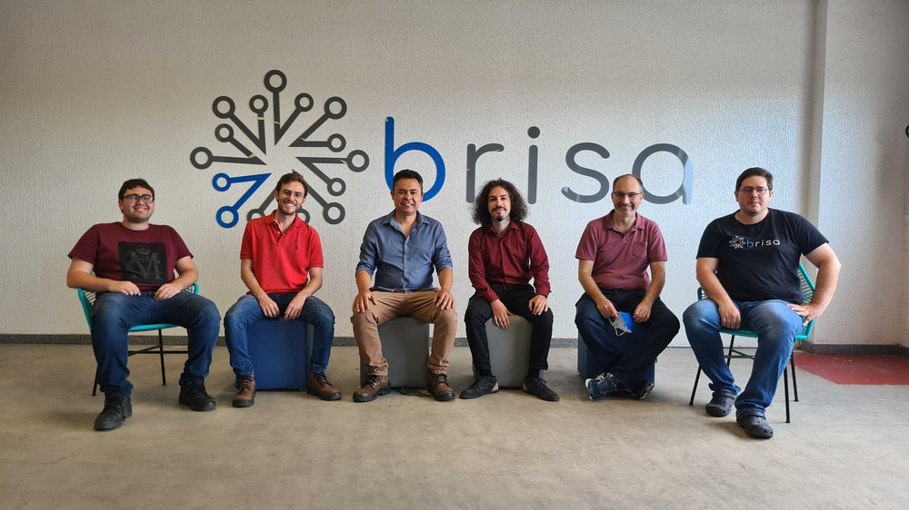
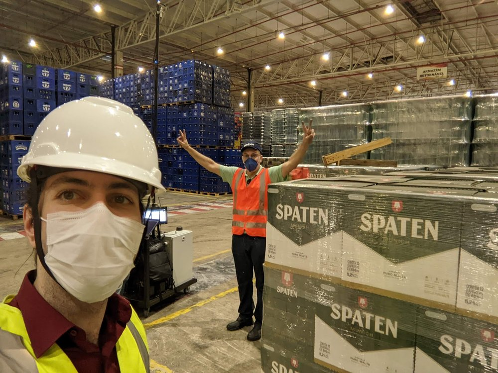
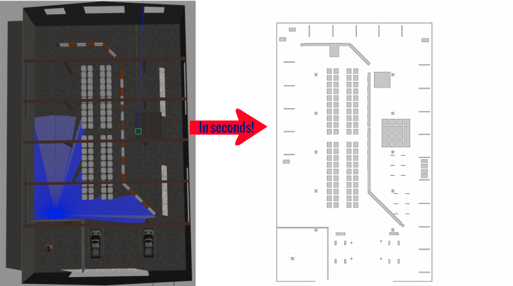

Open source

About me
Proven automation expert with cross-discipline competences in robotics, testing and software development. I enjoy integrating established and new technologies to create seamless connections between robotics and the Internet of Things. I am an accomplished CTO with expertise in robotics, devops, and embedded systems. With a proven track record of developing innovative solutions, I led a robotics startup named Brisa Robótica, transforming non-autonomous machines into an autonomous fleet while collecting valuable data in a custom dashboard. My experience working remotely with a global team, managing software engineers, and developing sales strategies makes me an ideal candidate for any technical leadership role.
One of my most valuable traits is my adaptability and anti-fragility. Throughout my career, I've faced many challenges, such as leading remotely a startup in Brazil from Germany, or working with minimalistic hardware for a testing infrastructure. Despite these obstacles, I have consistently demonstrated my ability to pivot and adapt to changing circumstances, finding creative solutions to complex problems. I'm also a natural collaborator who recognizes the importance of processes, and I'm always looking for ways to support and uplift my team members, helping to build a strong and positive work culture.
Contact
For any inquiry, please contact me at d.bensoussan@proton.me.
If your inquiry relates to bugs or open-source project feature requests, consider posting a ticket on the GitHub project. If your inquiry relates to configuration support or private feature development, reach out and we will be able to support you in your projects.
Brisa — A robotics startup built from the ground up
Duration: 3.5 years
https://www.brisa.tech/
LinkedIn
AWS
Robotics Blog
In
"Empresas
e Negócios", one of the most important newspapers in Brazil
In
"SC inova", the most important newspaper in Santa Catarina, heart of industry in Brazil
As the CTO of Brisa Robótica, I was responsible for leading the development of our company's autonomous robotics solutions and custom data dashboard. Our startup specialized in transforming non-autonomous machines into an autonomous fleet and providing customized metrics to help our clients optimize their KPIs.
I faced various technical challenges, such as reverse-engineering machines, developing robotics software and developing our customers' dashboards. Additionally, I managed a team of software engineers, guided product timelines, and ensured the features aligned with our company's vision.
Brisa Robótica had two main business areas. The first involved taking existing machines and upgrading them into autonomous robots. The second involved collecting data from upgraded or existing robots to display in a customized dashboard. I worked closely with our clients to understand their individual use cases, developing modular data collection and dashboard solutions to meet their unique needs.
One of the unique challenges of my role was managing the business remotely from Germany while Brisa Robótica was located in Brazil. I had to learn about cultural differences with clients and work to overcome language barriers. I was also responsible for creating marketing materials, including sales slides and social media content, to promote our company's services and solutions. As a remote CTO based in Germany, I had to create software abstractions that would allow our team in Brazil to work seamlessly with me. This involved simple processes with a high flexibility to ensure that the team could work independently and efficiently on-site, despite the physical distance.
One of the key aspects of our success was partnering with industry leaders. We created partnerships with ABB Synerleap, ABB's innovation growth hub that helps startups accelerate and expand on a global market. We also worked with the AWS Robotics team to leverage their cloud platform and tools to develop and deploy our solutions.
Unfortunately, despite our efforts and the potential for our technology, Brisa Robótica ultimately failed. The high cost of our solutions, due in part to high import taxes on hardware, made us less competitive than manual labor. Additionally, the market for automation in Brazil was still small and risky, and we were unable to secure key clients. Despite these challenges, I am proud of the progress we made in developing cutting-edge technology and creating valuable partnerships with industry leaders.
Overall, my experience at Brisa Robótica involved leading the development of a cutting-edge technology solution, managing a team of software engineers, and creating customized data dashboards to meet the individual needs of our clients. This was the hardest challenge and I grew out of it
  Close ProjectDockerizing, automating software stack deployment and CI/CD
Duration: 1 year (part time)
Devops manager, putting the 4 main company software (nodejs and Angular)
in containers.
I then initiated the whole CI/CD pipeline automation. I also automated their deployment to deliver to more
clients in a reliable way by closing working with the development team.
https://www.myfeelix.de
1 year contract
- Docker
- Nginx
- Apache
- Jenkins
- CI/CD
- Traefik
- MySql
- Signavio
Autonomous robotics lawnmower
Duration: 2.5 years https://synapticon.com
I worked on this project in a team of 5 people following agile. Given the small size of the team and being in a startup, I worked on different topics:- Embedded C: Developed 15 low level applications and libraries on XMOS multicore chips: sensor data acquisition (encoder, imu, lidar), motor control, odometry. Refactored common code out of 5 libraries reducing total memory used by 25%
- Devops: Initiated, architected and managed a fully automated CI/CD pipeline, deployed microservice infrastructure for multiple architectures and providers (AWS for amd64 and Scaleway for arm64), wrote and automated processes and QA. Packaged C++/python applications in debian packages at start and then in containers later on
- Embedded Systems: Developed from scratch and maintained a minimalistic embedded Linux running on the robot aith OTA update. Debugged and optimized software libraries to be able to run on arm64. Optimized one OS to boot and start all applications in under 6 seconds
- Docker
- Jenkins
- AWS/Scaleway
- Apache
- x86_64/ARM64
- Terraform
- Packer
- Yocto
- Autoscaling
- ROS
- Virtual machines
- Embedded Systems
- Embedded C
- OTA Updates
- Real Time Kernel
Design and development of a scalable automated testing infrastructure for robotics hardware
Duration: 6 months https://synapticon.com
I developed a complete CI/CD pipeline for a testing infrastructure for robotics hardware. This farm is testing motor controllers, IOs, and robots. The master runs on a standard PC and all the slaves executing the tasks work on premise minimalistic hardware (Up squared boards). Developing CI/CD is in itself challenging, but working on on premise minimalistic hardware add challenges such as minimalistic resources. Adding onto this working with hardware (that can burn and some which cost tens of thousands of dollars) requires total control. The tasks related to devops topics included automating the machines OS creations with Yocto, provisioning them afterward with Ansible and enable OTA update of each machine with Mender. With a ready infrastructure, I implemented the tests in python using openhtf (test framework by Google made for hardware), acceptance test report and procedure. I also worked on tracking requirements to the tests to track what was fulfilled. For this, I closely worked with the product manager and safety manager.- Docker
- CI/CD on Hardware
- Jenkins
- Yocto
- Embedded Systems
- On Premise Infrastructure
- OTA Updates
- Real Time Kernel
DC - Data Collection Framework for ROS2
The DC project aims at integrating data collection pipelines into ROS 2. This is meant to plug to existing APIs, for analytics, not for live monitoring (some awesome tools exist already). Understanding and improving operations for any type of machine in any environment has become an important reason companies move to autonomous robots. This involves mostly pick and drop and inspection operations. This framework aims at helping collecting, validating and sending reliably the data to create such APIs and dashboards.
DC uses a modular approach, based on pluginlib and greatly inspired by Nav2 for its architecture. Pluginlib is used to configure which measurements are collected and where the data goes. Measurements and destinations are pluginlib plugins. In addition to pluginlib, most plugins use Fluent bit in the backend: Fluent Bit is a super fast, lightweight, and highly scalable logging and metrics processor and forwarder. It is the preferred choice for cloud and containerized environments. Developed and interfaced in C, it has already many features we directly can use, especially: high performance, reliability and data integrity (backpressure handling and data buffering in memory and filesystem).
Take a look on Github!Close Project
Gazebo world to ROS 2D map plugin
This project aims at transforming a Gazebo world environment to a 2D map readable by nav2 map server. This is especially practical when having large map and wanting to avoid doing an exploration where the robot can get lost and the mapping process would have to be redone from scratch
This is a port of a project initiated by ETH Zurich and ported to ROS1. My work has been to adapt it to work on more recent ROS2 versions.
Take a look on Github!
Close Project
Pre-commit hooks for ROS2
Improve ROS2 workflow with pre-commit hooks
- Same versions: Ensure all packages of a repository are of the same version. This is needed for bloom to build debian packages.
- Metadata: Ensure metadata is set in selected packages of a repository (license, maintainer and description).
Close Project